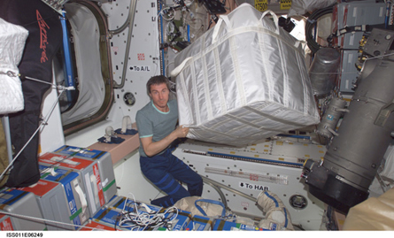

Photo courtesy Johnson Space Center/NASA
Constructing and supporting the International Space Station is a huge effort. Supplies are delivered to the station by the Space Shuttle or by Russian spacecraft. How much fuel and how many other reactants are required to launch a rocket? What is the risk of not transporting materials and supplies, like food, to the station?
In this unit you will add to your understanding of quantitative properties of chemical processes. You will learn to predict and analyze the quantities of substances that participate in chemical reactions, a skill used by scientists, engineers, and technicians involved in spaceflight. You will also learn to consider a chemical system as a converter of matter, and you will see what influence the reactants of a process have on the products that result.
The major concepts developed in this unit will allow you to
explain how balanced chemical equations indicate the quantitative relationships among reactants and products involved in chemical changes
use stoichiometry in quantitative analyses of chemical systems